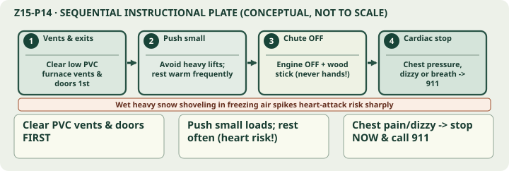

Z15-P14 · Disaster scenarios · New manuscript
Avoid snow-shoveling cardiac strain and manage post-blizzard exterior hazards
Prevent preventable post-storm heart attacks, back injuries, and roof/vent failures while digging out after heavy snowfalls.
When it applies · Post-blizzard residential cleanup, especially wet heavy snowfalls and sub-zero mornings.
Equipment · Ergonomic push shovel, traction cleats/warm layers, buddy awareness, and snow-blower safety discipline.

Actions
- Recognize that heavy wet snow shoveling in freezing air spikes heart rate and blood pressure dramatically—push snow rather than lifting heavy loads, take small scoops, pace slowly with frequent warm indoor breaks, stay hydrated, and let younger/fitter helpers or hired plows clear driveways for older adults or anyone with heart history.[D10, T02]
- Clear exterior furnace/water-heater PVC exhaust vents, fire hydrants near the curb, and primary exit doors FIRST before tackling full driveways—and NEVER stick hands or feet inside a clogged snowblower chute (always shut the engine completely OFF and use a wooden clearing stick!).[U12, K02, D10]
- Watch overhead for hanging icicles and sliding roof snow avalanches when clearing walkways right along building eaves.[U10, D10]
Failure recognition · Rushing out at dawn with known high blood pressure to heave waist-deep wet snow nonstop, ignoring chest tightness and shortness of breath.[D10, T02]
Verify · Confirm exterior exhaust vents and exit doors cleared first, slow push-and-rest pacing used, and zero hands placed near snowblower chutes.[U12, D10]
Stop or change course · ANY chest pressure, jaw/arm pain, unusual shortness of breath, dizziness, or cold sweat while shoveling requires stopping immediately, sitting inside, and calling 911.[T02, M05]
Evidence and editorial notes
- D10 · FEMA / Ready.gov · Winter Weather (current web edition)
- Section: Blizzards, Ice Storms, and Multi-Day Freezing Blackouts · Conditions: Blizzard Warnings, Ice Storm Warnings, and extreme wind-chill emergencies
Support: Complete supply, fuel, and medication staging before storm onset, stay off snow/ice-closed roads, prepare safe non-combustion warmth consolidation indoors, keep vents/exits clear of snowdrifts, and evacuate to community warming shelters early if indoor heat fails.
Limitations: Ice storms down overhead power lines and trees simultaneously, delaying utility restoration for days across wide areas. · Conflicting evidence: None; connects Z15 winter disaster response with Z12/Z13.
Editorial note: Grounds winter-storm travel halts and warming-center transitions. · Specialist reviewer: Cold-weather emergency management
Primary source · checked 2026-11-24 - K02 · OSHA · Hand and Power Tools (OSHA 3080) (agency PDF)
- Section: Hand Tools > Knives, Chisels, Impact and Wrenches · Conditions: Manual cutting, striking and prying operations
Support: Direct cutting blades away from the body and bystanders, never use cracked wooden handles or mushroomed striking heads, and do not substitute wrenches or blades as pry bars.
Limitations: Does not specify material tensile ratings for improvised handles. · Conflicting evidence: None; directly informs safe cutting and impact-tool failure cards.
Editorial note: Prevents blade slip, splintered-handle and spalling-metal injuries. · Specialist reviewer: Tool safety and wilderness medicine
Primary source · checked 2026-11-24 - M05 · NIH / MedlinePlus · Shock (current web edition)
- Section: Recognizing Circulatory Shock and Positioning · Conditions: Injured or ill patient with pale cool clammy skin, rapid weak pulse, confusion, or dizziness
Support: Treat suspected shock as a life-threatening emergency: call 911, control external bleeding, keep the person warm and insulated from cold ground, and do not give food or drink.
Limitations: Field responders cannot diagnose internal hemorrhage or administer IV fluids. · Conflicting evidence: None; reinforces keeping suspected shock patients NPO and warm.
Editorial note: Core shock recognition and stabilization boundary in Z10. · Specialist reviewer: Emergency and wilderness medicine
Primary source · checked 2026-11-24 - T02 · American Red Cross · First Aid Steps (current web edition)
- Section: First Aid Steps > Call 9-1-1 · Conditions: Lay emergency response to unresponsiveness, abnormal breathing or severe bleeding
Support: Activate EMS and get needed equipment. Follow dispatcher directions and act within training.
Limitations: Remote locations may delay EMS arrival, requiring sustained stabilization after activation. · Conflicting evidence: None; aligns with NPS-E.
Editorial note: Mandates early emergency activation and dispatcher adherence. · Specialist reviewer: EMS and wilderness medicine
Primary source · checked 2026-11-24 - U10 · FEMA / Ready.gov · Winter Weather (current web edition)
- Section: Winter Household Resilience > Frozen Pipes, Ice Dams, and Heating Loss · Conditions: Sub-zero Upper Midwest winter outages and prolonged cold snaps
Support: Prevent burst pipes by insulating exposed lines, keeping cabinet doors open, shutting off and draining water lines per plumbing guidance if indoor temperatures drop toward freezing, and consolidating household occupants into one safe insulated interior room.
Limitations: Draining hydronic boilers or gas water heaters requires exact manufacturer/plumber steps to prevent equipment damage or gas leaks. · Conflicting evidence: None; regionalizes winter home defense for Minnesota conditions.
Editorial note: Anchors winter pipe protection, thermal-zone consolidation, and abandonment thresholds. · Specialist reviewer: Residential plumbing, HVAC, and cold-weather emergency management
Primary source · checked 2026-11-24 - U12 · CPSC · CO Alarms (current web edition)
- Section: Home Alarms > Smoke, Carbon Monoxide, and Battery Backup Readiness · Conditions: Occupied residences with fuel-burning furnaces, water heaters, attached garages, or outage generators
Support: Maintain interconnected or battery-backed CO and smoke alarms on every floor and outside sleeping rooms, replace expired sensors on schedule, and keep exterior furnace/dryer/exhaust vents clear of drifting snow.
Limitations: Blocked high-efficiency PVC furnace intake/exhaust pipes in heavy snow can force CO back indoors or lock out heating systems. · Conflicting evidence: None; integrates with C09 and Z13-R03.
Editorial note: Connects winter snow-drift vent inspection to household CO prevention. · Specialist reviewer: Carbon monoxide safety and residential HVAC
Primary source · checked 2026-11-24
Source lineage · FEMA Winter Weather and AHA/Red Cross Heart Safety; new manuscript · Classification · New manuscript.